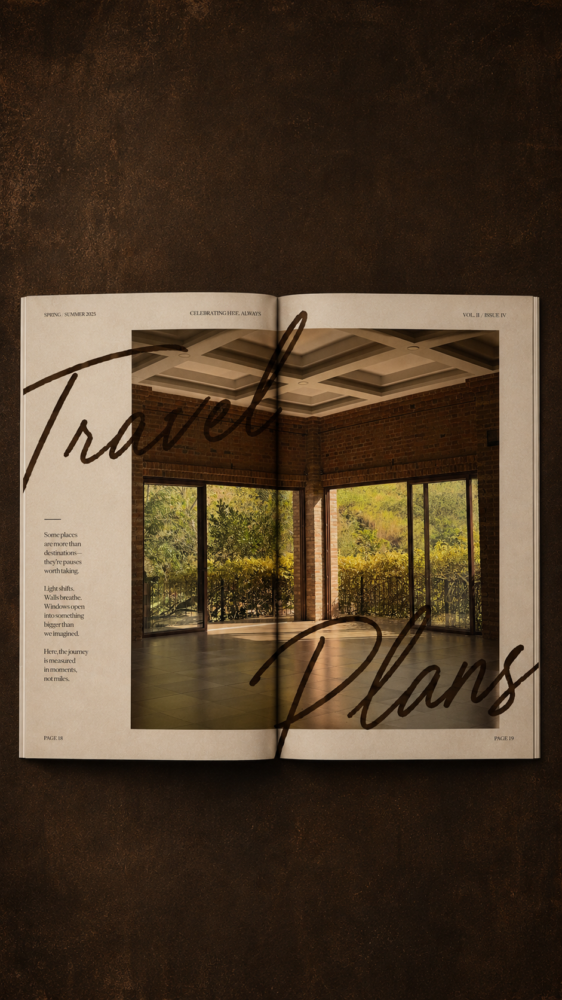

Aquí está todo lo que necesitan saber para llegar al wedding weekend. Saldremos de SPS el jueves 04, y el regreso será el domingo 07 o como cada quien lo organice.
Travel
Cómo llegar · Cómo moverse
Index:
[Arriving to SPS, HN] [Arriving to Copán]
[Arriving to SPS, HN] [Arriving to Copán]

FIG 005 — Centro de Convenciones Marina Copán. The venue for the wedding reception.Arriving to SPS, HN
I. Cuándo llegar
Best arrival window: Lunes 01 — Jueves 04
Si vienen antes del jueves, let me know para ayudarlas a coordinar estadía y transporte del aeropuerto.
II. Cómo llegar
The easiest way is to arrive to San Pedro Sula — Aeropuerto Ramón Villeda Morales.
MAD → SPSAir Europa
MAD → MIA → SPSAmerican
MAD → SAL → SPSIberia
BAQ → BOG → SAPIberia
III. Where to stay
Hotels y airbnbs por confirmar. Le avisan a Marce qué día llegan y les ayudará a coordinar.
Arriving to Copán
I. Cuándo llegar
El wedding weekend empieza el Jueves 04 de Febrero
Lo ideal es que quienes puedan salgan a Copán ese día. Si no pueden llegar el jueves, no pasa nada — también habrá transporte el viernes 05.
II. Cómo llegar
Roadtrip de SPS a Copán. 3h drive.
Habrá transporte disponible: jueves 04 por la mañana + tarde y viernes 05. Horarios por confirmar. También pueden alquilar carro si es preferido.
III. Where to stay
Hotel Marina Copán
Hotel Ancestral
Más cerca de la fecha les compartiré horarios exactos, punto de salida y todos los detalles finales.